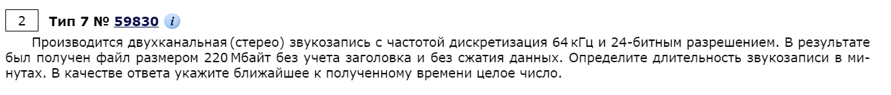
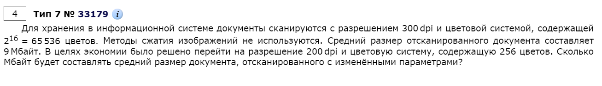
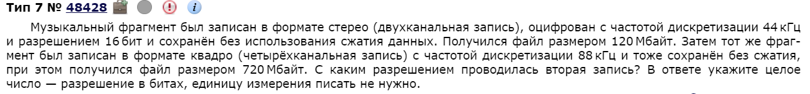
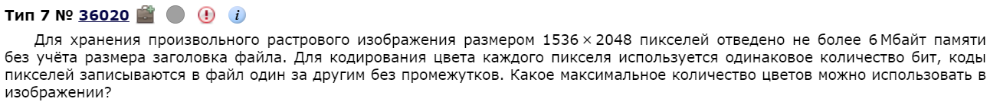
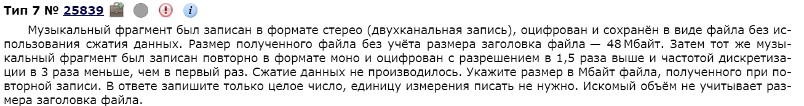
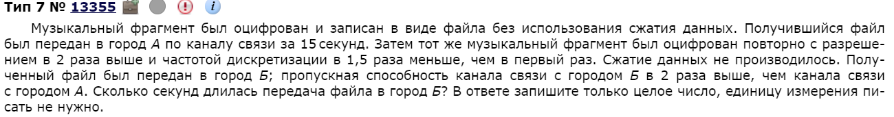
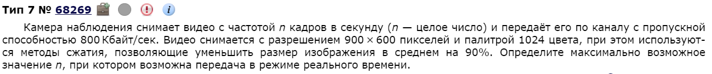
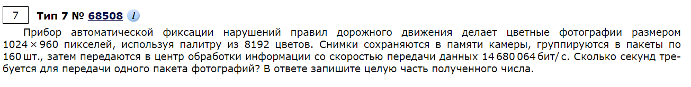
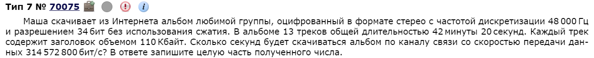

Легчайшее задание, решается ручками с помощью калькулятора. Тем не менее, процент его решаемости не такой высокий из-за двух причин: большое разнообразие условий и частые ошибки по невнимательности.
Существует несколько основных прототипов этого задания.
8 бит = 1 байт = 2^3
1024 байт = 1 Кбайт = 2^10 * 2^3 =2^13
1024 Кбайт = 1 Мбайт = 2^23
1024 Мбайт = 1 Гбайт = 2
Пример 1)

Итак, тут проще показать, а потом делать по аналогии для каждого типа заданий.
Мы хотим найти время. Если известен полный объем файла, то это то сколько информации кодируется в секунду * на время, которые мы ищем. Если запись двухканальная, надо умножить на 2. Частота дискретизации - это, по сути, 1 колебание т.е. 1 сигнал. 24-битное разрешение означает, что одно такое колебание кодируется в 24 бита. Т.е.
Вот и все. Осталось решить уравнение:
Уравнение решается любым доступным способом: хоть на бумажке, хоть на компе с калькулятором.
Пример 2)

Тут также ничего сложного: нужно найти пропорциями сколько будет составлять новый объем.
DPI (dots per inch) - это то, сколько точек приходится на дюйм изображения (всегда квадратное т.е. 200 на 200 или 300 на 300). Более глубокого определения нам знать и не надо, надо всего лишь понимать, что если DPI стало меньше, то объем файла уменьшится. Найдем пропорцией: . Т.е. из-за перехода на более низкий DPI изображение уменьшится в 4/9 раз.
Далее посчитаем пропорцию цветов. Делается это с помощью формулы т.е. то сколько цветов определяет кодировку в битах каждого цвета и наоборот. Т.е. если цветов 65536, то каждый цвет кодируется 16 битами. А если 256, то 8 соответственно (потому, что ). Т.е. из-за перехода на меньшее кол-во цветов изображение уменьшится в раз.
Остается перемножить:
Пример 3)

Задача похожа на первую, но чуть посложнее. Тем не менее, алгоритм решения такой же - решить правильно составленное уравнение. Пусть х - это разрешение второй записи, тогда:
Получим:
Т.е. x = 24
Пример 4)

Объём растрового изображения находится как произведение количества пикселов в изображении на объём памяти x, необходимый для хранения цвета одного пикселя:
Воспользуемся формулой :
Пример 5)

Ну тут ваще изи. Достаточно найти пропорцией:
Пример 6)

Как обсуждалось ранее, объем файла прямо пропорционален разрешению файла и его частоте дискретизации. Длительность передачи обратно пропорциональна пропускной способности канала связи (как скорость обратно пропорциональна времени, точно также и тут), откуда получаем, что длительность передачи файла во второй раз равна:
Пример 7)

Т.к. на палитру 1024 цвета, то каждый цвет - это 10 бит. Т.е. объем изображения это
Не забудем методы сжатия, которые сжимают на 90% т.е.
Если передача происходит в режиме реального времени, то это значит, что объем кадров должен быть равен или меньше 800 Кбайт:
Т.е. ответ 12
Пример 8)

Т.к. цветов 8192, то битов 13. Стало быть, одна фотография занимает бит.
Размер пакета соответственно это все выше да еще умножить на 160
Ну а время передачи - это вон тот общий объем пакета поделить на скорость передачи. Можно в битах. Получится около 139 секунд.
Пример 9)

Общий объем альбома:
Общий объем заголовков:
Ну и время передачи:
Ответ: 26